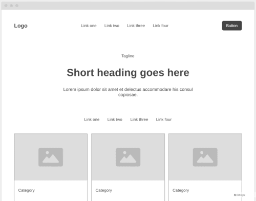

Overview
Purpose
To store and present some projects that I have been working on
Audience
For potential employers, family members, anyone curious, and myself mainly
Branding
Website Logo
Style Guide
Color Palette
| Primary | Secondary | Accent 1 | Accent 2 |
|---|---|---|---|
Typography
Heading Font: Franklin Gothic
Paragraph Font: Arial
Normal paragraph example
Here is what the normal paragraph color would look like
Colored paragraph example
This is what a colored paragraph will look like.
Navigation
Site Map
Content
Home page
This is the online portfolio for Easton Thompson. Here you will find past and current projects that he is working on.
Images for the Home page
.jpeg)
.jpeg)
Projects
Here is my server project. It is a old Lenovo Think Pad running Ubuntu server 24.02LTS. I am currentlly having issues getting it assigned a static ip. Currently working on a solution using a personal router.
Images for the Page 2
.jpg)
 (1).jpeg)
Thesis
Here is one of my college thesises. It is about the idea of god-slaying as portrayed in the American and Japanese games. Here below, you will find a .pdf of it for download
Images for the Page 3
.png)
.png)
Wireframes
Create three wireframes for your site. One for each page and list them here
Home

Server Project
I'll have the picture of the server on the left side with detailed desctiption of what I've done including some challenges I ran into.
.png)
Thesis
I'll have my thesis hosted here with a pdf of it for people to download
.png)